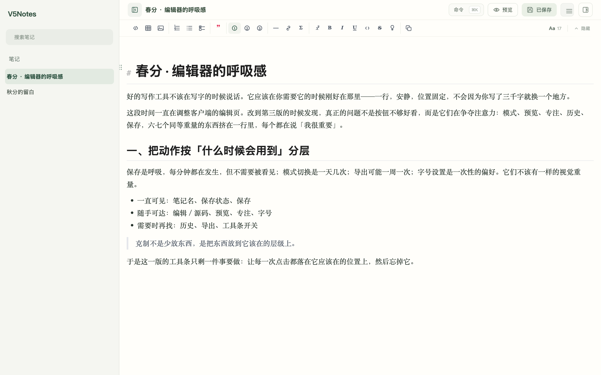

V5NOTES · 编辑器交互改版 · 第三轮
预览 / 编辑 的切换方式
目标只有一个：让「从读走到改，再走回来」这条动线更短、更直、更让人放心。三套逻辑各出一版真实原型，点开可交互（预览里能点「编辑」，编辑里可输入触发未保存），选定后再落到 Vue。
现状的问题：同一个「切换模式」动作，在预览态是一个墨绿实心大按钮「编辑」（顶栏最右），在编辑态却变成描边小按钮「预览」（挪到保存左边）。形状、轻重、位置、甚至文案方向每次都在变；进入编辑很显眼，退出编辑很安静。用户说的「别扭、动线不好」就是这个。
现状（before）

编辑态描边「预览」+ 实心保存
A
定档分段
把切换做成一个不动的对象
做什么：在笔记名右侧放一个固定的两段开关「预览 | 编辑」，两个选项始终可见，当前模式实心高亮。它锚在左侧、永远不挪，右侧的保存 / 历史 / 更多怎么变都推不动它。
动线：切换 = 在同一坐标点同一对象上一次点击。进入和退出形状、轻重完全对称，不再「换副面孔」。
B
悬浮双态胶囊
把切换放到手边，让它就地变身
做什么：顶栏不再放模式按钮。正文下方浮一枚胶囊：预览态是「✎ 编辑」，编辑态原地展开成「完成 · 保存」。同一个锚点，内容就地变形，不搬家。
动线：控件贴着正文、靠近视线落点，读到底就能直接进入编辑；顶栏整条在两种模式下完全不变，减少「世界在闪」。
风险：浮层会遮内容（已留 168px 底部安全区）；窄屏需要退化为贴边。
打开完整版 →
C
就地编辑 · 内容锚定
让切换长在文档上，而不是顶栏上
做什么：模式控件不在顶栏，而在正文页面右上角。预览时是一枚安静的「✎ 编辑」小胶囊；编辑时同一位置变成「编辑中 · 完成」的状态条。「完成」= 先保存再回到阅读，把「退出」和「保存」合成一个动作。
动线：控件跟着文档走，落在纸面、不落在 chrome；进出永远在同一个内容相对位置，阅读优先、最克制。
风险：控件藏在正文区，弱于顶栏的可见性（已常显、非 hover 才出现）；实现上要把「完成」接 finishEditing。
打开完整版 →
三版都复用同一个 V5Editor 实例、都保留 ⌘1/2/3 快捷键、都满足「切预览前先存成功、失败留编辑态」。选定后可单独做一版「B 的胶囊 + A 的分段高亮」的融合。